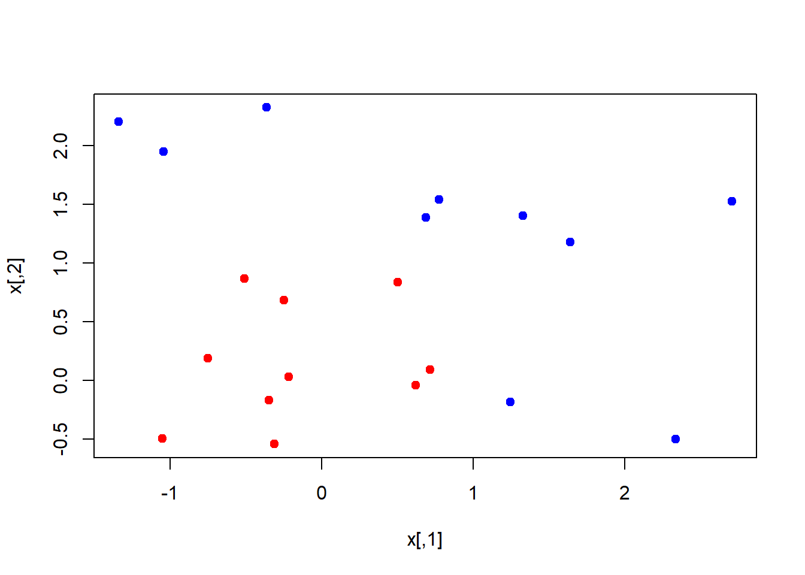
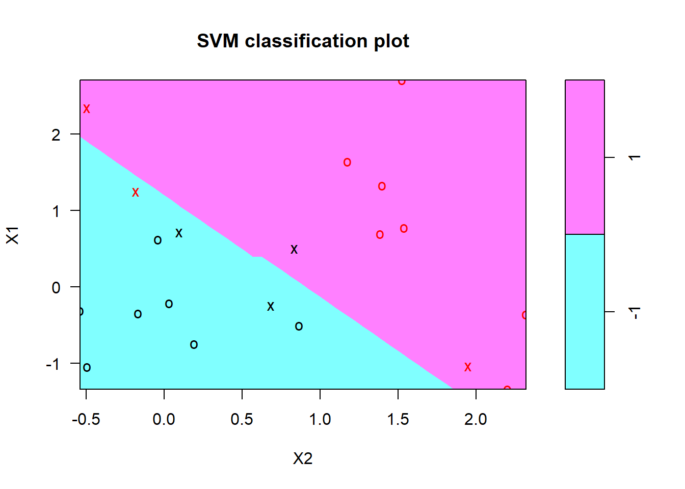
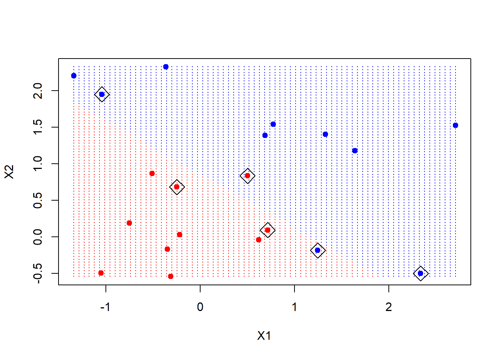
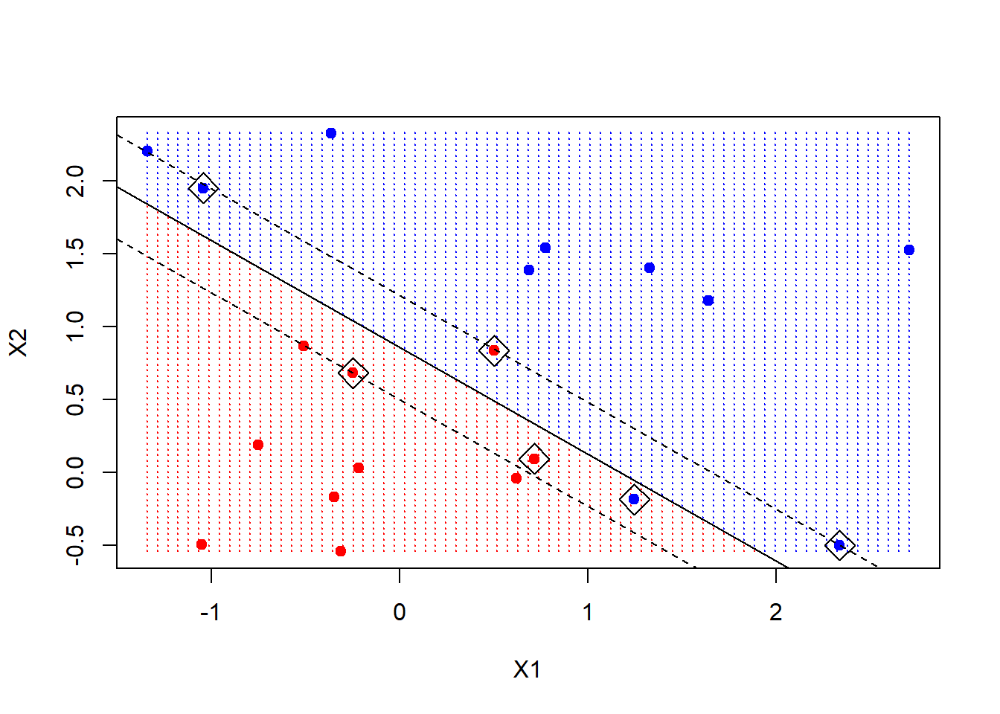
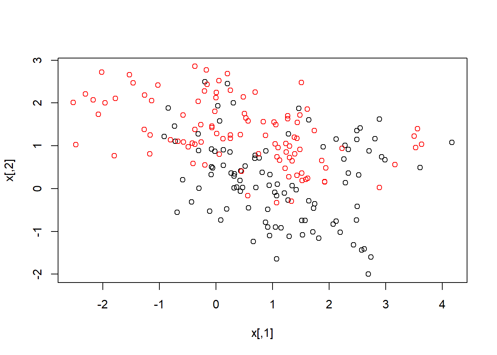
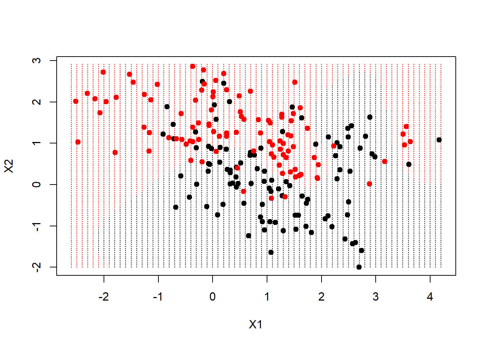
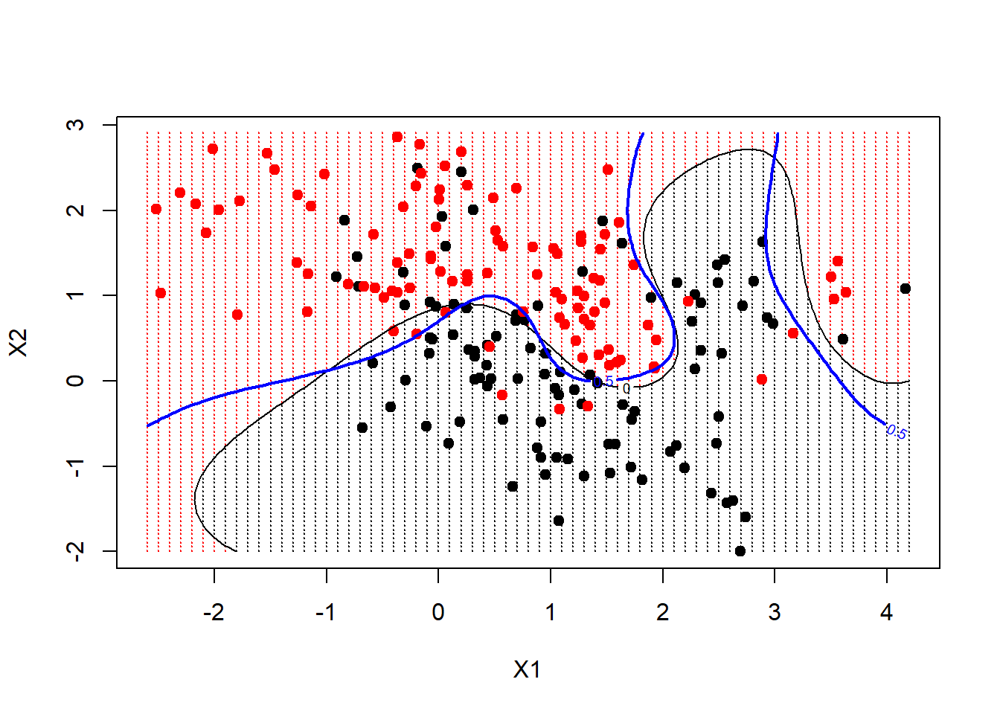

To demonstrate the SVM, it is easiest to work in low dimensions, so we can see the data.
Lets generate some data in two dimensions, and make them a little separated.
set.seed(10111)
x <- matrix(rnorm(40), 20, 2)
y <- rep(c(-1,1), c(10,10))
x[y==1, ] <- x[y==1, ] + 1
plot(x, col=y+3, pch=19)
Now we will load the package e1071 which contains the svm function we will use. We then compute the fit. Notice that we have to specify a cost parameter, which is a tuning parameter.
library(e1071)
dat <- data.frame(x, y=as.factor(y))
svmfit <- svm(y ~., data = dat, kernel="linear", cost=10, scale=FALSE)
print(svmfit)##
## Call:
## svm(formula = y ~ ., data = dat, kernel = "linear", cost = 10,
## scale = FALSE)
##
##
## Parameters:
## SVM-Type: C-classification
## SVM-Kernel: linear
## cost: 10
## gamma: 0.5
##
## Number of Support Vectors: 6plot(svmfit, dat)
As mentioned in the the chapter, the plot function is somewhat crude, and plots X2 on the horizontal axis (unlike what R would do automatically for a matrix). Lets see how we might make our own plot.
The first thing we will do is make a grid of values for X1 and X2. We will write a function to do that, in case we want to reuse it. It uses the handy function expand.grid, and produces the coordinates of n*n points on a lattice covering the domain of x. Having made the lattice, we make a prediction at each point on the lattice. We then plot the lattice, color-coded according to the classification. Now we can see the decision boundary.
The support points (points on the margin, or on the wrong side of the margin) are indexed in the $index component of the fit.
make.grid <- function(x, n=75){
grange <- apply(x, 2, range)
x1 <- seq(from=grange[1, 1], to=grange[2, 1], length=n)
x2 <- seq(from=grange[1, 2], to=grange[2, 2], length=n)
expand.grid(X1 = x1, X2 = x2)
}
xgrid <- make.grid(x)
ygrid <- predict(svmfit, xgrid)
plot(xgrid, col=c("red","blue")[as.numeric(ygrid)], pch=20, cex=.2)
points(x, col=y+3, pch=19)
points(x[svmfit$index, ], pch=5, cex=2)
The svm function is not too friendly, in that we have to do some work to get back the linear coefficients, as described in the text. Probably the reason is that this only makes sense for linear kernels, and the function is more general. Here we will use a formula to extract the coefficients; for those interested in where this comes from, have a look in chapter 12 of ESL (“Elements of Statistical Learning”).
We extract the linear coefficients, and then using simple algebra, we include the decision boundary and the two margins.
beta <- drop(t(svmfit$coefs)%*%x[svmfit$index, ])
beta0 <- svmfit$rho
plot(xgrid, col=c("red","blue")[as.numeric(ygrid)], pch=20, cex=.2)
points(x, col=y+3, pch=19)
points(x[svmfit$index, ], pch=5, cex=2)
abline(beta0/beta[2], -beta[1]/beta[2])
abline((beta0-1)/beta[2], -beta[1]/beta[2], lty=2)
abline((beta0+1)/beta[2], -beta[1]/beta[2], lty=2)
Just like for the other models in this book, the tuning parameter C has to be selected. Different values will give different solutions. Rerun the code above, but using C=1, and see what we mean. One can use cross-validation to do this.
Instead, we will run the SVM on some data where a non-linear boundary is called for. We will use the mixture data from ESL
load(url("http://www.stanford.edu/~hastie/ElemStatLearn/datasets/ESL.mixture.rda"))
names(ESL.mixture)## [1] "x" "y" "xnew" "prob" "marginal" "px1"
## [7] "px2" "means"rm(x, y)
attach(ESL.mixture)These data are also two dimensional. Lets plot them and fit a nonlinear SVM, using a radial kernel.
plot(x, col = y + 1)
dat <- data.frame(y = factor(y), x)
fit <- svm(factor(y) ~ ., data = dat, scale = FALSE, kernel = "radial", cost = 5)Now we are going to create a grid, as before, and make predictions on the grid. These data have the grid points for each variable included on the data frame.
xgrid <- expand.grid(X1 = px1, X2 = px2)
ygrid <- predict(fit, xgrid)
plot(xgrid, col = as.numeric(ygrid), pch = 20, cex = 0.2)
points(x, col = y+1, pch = 19)
We can go further, and have the predict function produce the actual function estimates at each of our grid points. We can include the actual decision boundary on the plot by making use of the contour function. On the dataframe is also prob, which is the true probability of class 1 for these data, at the gridpoints. If we plot its 0.5 contour, that will give us the Bayes Decision Boundary, which is the best one could ever do.
func <- predict(fit, xgrid, decision.values = TRUE)
func <- attributes(func)$decision
xgrid <- expand.grid(X1 = px1, X2 = px2)
ygrid <- predict(fit, xgrid)
plot(xgrid, col = as.numeric(ygrid), pch = 20, cex = 0.2)
points(x, col = y + 1, pch = 19)
contour(px1, px2, matrix(func, 69, 99), level = 0, add = TRUE)
contour(px1, px2, matrix(prob, 69, 99), level = 0.5, add = TRUE, col = "blue",
lwd = 2)
We see in this case that the radial kernel has done an excellent job.